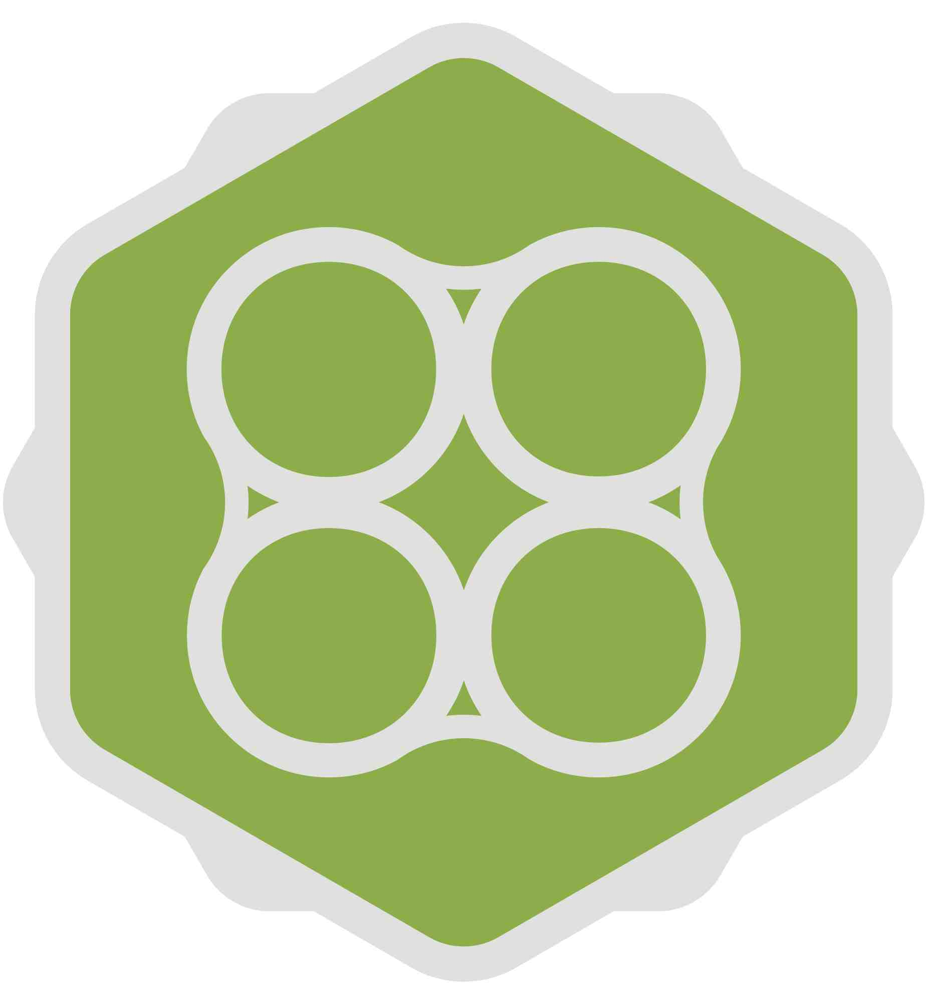

On Saturday the 11th of May, right after ScotlandJS, we are hosting NodeCopter!
All proceeds from ticket sales will be donated directly to Maggie's Cancer Centres.
To secure your ticket donate a minimum of £50 through our JustGiving page.
We have a maximum of 40 tickets available. Get in quick as a lot of people have been asking about this!
Huge thanks are due to our facilitators Andrew Nesbit @teabass and Julian Cheal @juliancheal
What better way to spend a Saturday, hacking on drones and raising money for charity?